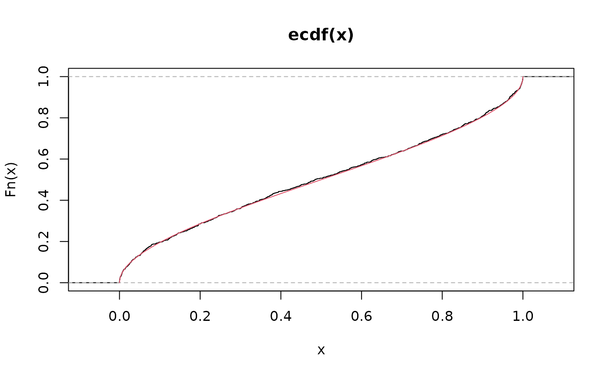

Normal-kernel Vasicek-type distribution with mean parameterization
NVASIM.RdDefines the normal-kernel Vasicek distribution under a mean
parameterization for use as a gamlss.family. The parameter
\(\mu\) represents the mean of the distribution, with
\(0 < \mu < 1\), and \(\sigma\) is a shape parameter.
The density, distribution function, quantile function and random
number generation are provided by dNVASIM(), pNVASIM(),
qNVASIM() and rNVASIM(), respectively.
Usage
dNVASIM(x, mu, sigma, log = FALSE)
pNVASIM(q, mu, sigma, lower.tail = TRUE, log.p = FALSE)
qNVASIM(p, mu, sigma, lower.tail = TRUE, log.p = FALSE)
rNVASIM(n, mu, sigma)
NVASIM(mu.link = "logit", sigma.link = "logit")Arguments
- x
Vector of quantiles in the interval \((0,1)\).
- mu
Vector of mean values.
- sigma
Vector of shape parameter values.
- log
Logical; if
TRUE, the log-density is returned.- q
Vector of values in \([0,1]\) at which the cumulative distribution function is evaluated.
- lower.tail
Logical; if
TRUE, probabilities \(P(X \le x)\) are returned.- log.p
Logical; if
TRUE, probabilitiespare given aslog(p)or cumulative probabilities are returned on the log scale, as appropriate.- p
Vector of probabilities in \([0,1]\) on the probability scale.
- n
Number of observations. If
length(n) > 1, the length is taken to be the number required.- mu.link
Link function for the \(\mu\) parameter.
- sigma.link
Link function for the \(\sigma\) parameter.
Details
Probability density function $$f(x\mid \mu ,\sigma )=\sqrt{\frac{1-\sigma }{\sigma }}\exp \left\{ \frac{1}{2}\left[ \Phi ^{-1}\left( x\right) ^{2}-\left( \frac{\Phi ^{-1}\left( x\right) \sqrt{1-\sigma }-\Phi ^{-1}\left( \mu \right) }{\sqrt{\sigma }}\right) ^{2}\right] \right\}$$
Cumulative distribution function $$F(x\mid \mu ,\sigma )=\Phi \left( \frac{\Phi ^{-1}\left( x\right) \sqrt{1-\sigma }-\Phi ^{-1}\left( \mu \right) }{\sqrt{\sigma }}\right)$$
Quantile function $$Q(p \mid \mu ,\sigma )=F^{-1}(p \mid \mu ,\sigma )=\Phi \left(\frac{\Phi ^{-1}\left(\mu\right) +\Phi ^{-1}\left( p \right) \sqrt{\sigma }}{\sqrt{1-\sigma }}\right) $$
Expected value $$E(X) = \mu$$
Variance $$Var(X) = \Phi_2\left ( \Phi^{-1}(\mu),\Phi^{-1}(\mu),\sigma \right )-\mu^2$$ where \((x, \mu, \sigma, p) \in (0,1)\) and \(\Phi_2(\cdot)\) is the cumulative distribution function for the standard bivariate normal distribution with correlation \(\sigma\).
Note
In the NVASIM() parameterization, \(\mu\) corresponds to the
mean of the distribution and \(\sigma\) is a shape parameter.
References
Hastie, T. J. and Tibshirani, R. J. (1990). Generalized Additive Models. Chapman and Hall, London.
Mazucheli, J., Alves, B., Korkmaz, M. C., and Leiva, V. (2022). Vasicek quantile and mean regression models for bounded data: New formulation, mathematical derivations, and numerical applications. Mathematics, 10, 1389. doi:10.3390/math10091389
Rigby, R. A. and Stasinopoulos, D. M. (2005). Generalized additive models for location, scale and shape (with discussion). Applied Statistics, 54(3), 507–554.
Rigby, R. A., Stasinopoulos, D. M., Heller, G. Z., and De Bastiani, F. (2019). Distributions for Modeling Location, Scale, and Shape: Using GAMLSS in R. Chapman and Hall/CRC.
Stasinopoulos, D. M. and Rigby, R. A. (2007). Generalized additive models for location, scale and shape (GAMLSS) in R. Journal of Statistical Software, 23(7), 1–46.
Stasinopoulos, D. M., Rigby, R. A., Heller, G., Voudouris, V., and De Bastiani, F. (2017). Flexible Regression and Smoothing: Using GAMLSS in R. Chapman and Hall/CRC.
Vasicek, O. A. (1987). Probability of loss on loan portfolio. KMV Corporation.
Vasicek, O. A. (2002). The distribution of loan portfolio value. Risk, 15(12), 160–162.
Author
Josmar Mazucheli jmazucheli@gmail.com Bruna Alves pg402900@uem.br
Examples
set.seed(123)
x <- rNVASIM(n = 1000, mu = 0.50, sigma = 0.69)
R <- range(x)
S <- seq(from = R[1], to = R[2], length.out = 1000)
hist(x, prob = TRUE, main = 'Vasicek')
lines(S, dNVASIM(x = S, mu = 0.50, sigma = 0.69), col = 2)
 plot(ecdf(x))
lines(S, pNVASIM(q = S, mu = 0.50, sigma = 0.69), col = 2)
plot(ecdf(x))
lines(S, pNVASIM(q = S, mu = 0.50, sigma = 0.69), col = 2)

plot(quantile(x, probs = S), type = "l")
lines(qNVASIM(p = S, mu = 0.50, sigma = 0.69), col = 2)
 library(gamlss)
#> Loading required package: splines
#> Loading required package: gamlss.data
#>
#> Attaching package: ‘gamlss.data’
#> The following object is masked from ‘package:datasets’:
#>
#> sleep
#> Loading required package: gamlss.dist
#> Loading required package: nlme
#> Loading required package: parallel
#> ********** GAMLSS Version 5.5-0 **********
#> For more on GAMLSS look at https://www.gamlss.com/
#> Type gamlssNews() to see new features/changes/bug fixes.
set.seed(123)
data <- data.frame(y = rNVASIM(n = 100, mu = 0.5, sigma = 0.69))
fit <- gamlss(y ~ 1, data = data, mu.link = 'logit', sigma.link = 'logit', family = NVASIM)
#> GAMLSS-RS iteration 1: Global Deviance = -35.9844
#> GAMLSS-RS iteration 2: Global Deviance = -35.9846
1 /(1 + exp(-fit$mu.coefficients))
#> (Intercept)
#> 0.4981563
1 /(1 + exp(-fit$sigma.coefficients))
#> (Intercept)
#> 0.6777598
if (FALSE) { # \dontrun{
library(gamlss)
set.seed(123)
n <- 1000
x <- rbinom(n, size = 1, prob = 0.5)
eta <- 0.5 + 1 * x;
mu <- 1 / (1 + exp(-eta));
sigma <- 0.5;
y <- rNVASIM(n, mu, sigma)
data <- data.frame(y, x)
fit <- gamlss(y ~ x, data = data, family = NVASIM, mu.link = 'logit', sigma.link = 'logit',
control = gamlss.control(n.cyc = 200))
summary(fit)
} # }
library(gamlss)
#> Loading required package: splines
#> Loading required package: gamlss.data
#>
#> Attaching package: ‘gamlss.data’
#> The following object is masked from ‘package:datasets’:
#>
#> sleep
#> Loading required package: gamlss.dist
#> Loading required package: nlme
#> Loading required package: parallel
#> ********** GAMLSS Version 5.5-0 **********
#> For more on GAMLSS look at https://www.gamlss.com/
#> Type gamlssNews() to see new features/changes/bug fixes.
set.seed(123)
data <- data.frame(y = rNVASIM(n = 100, mu = 0.5, sigma = 0.69))
fit <- gamlss(y ~ 1, data = data, mu.link = 'logit', sigma.link = 'logit', family = NVASIM)
#> GAMLSS-RS iteration 1: Global Deviance = -35.9844
#> GAMLSS-RS iteration 2: Global Deviance = -35.9846
1 /(1 + exp(-fit$mu.coefficients))
#> (Intercept)
#> 0.4981563
1 /(1 + exp(-fit$sigma.coefficients))
#> (Intercept)
#> 0.6777598
if (FALSE) { # \dontrun{
library(gamlss)
set.seed(123)
n <- 1000
x <- rbinom(n, size = 1, prob = 0.5)
eta <- 0.5 + 1 * x;
mu <- 1 / (1 + exp(-eta));
sigma <- 0.5;
y <- rNVASIM(n, mu, sigma)
data <- data.frame(y, x)
fit <- gamlss(y ~ x, data = data, family = NVASIM, mu.link = 'logit', sigma.link = 'logit',
control = gamlss.control(n.cyc = 200))
summary(fit)
} # }